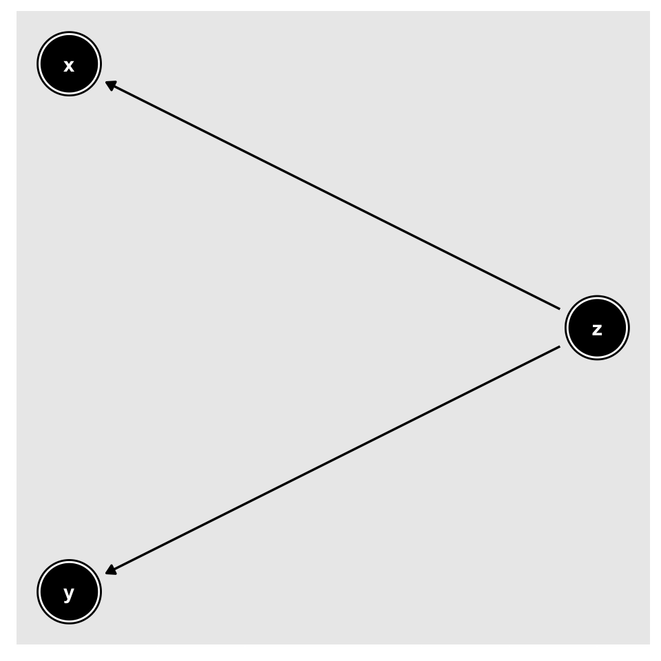
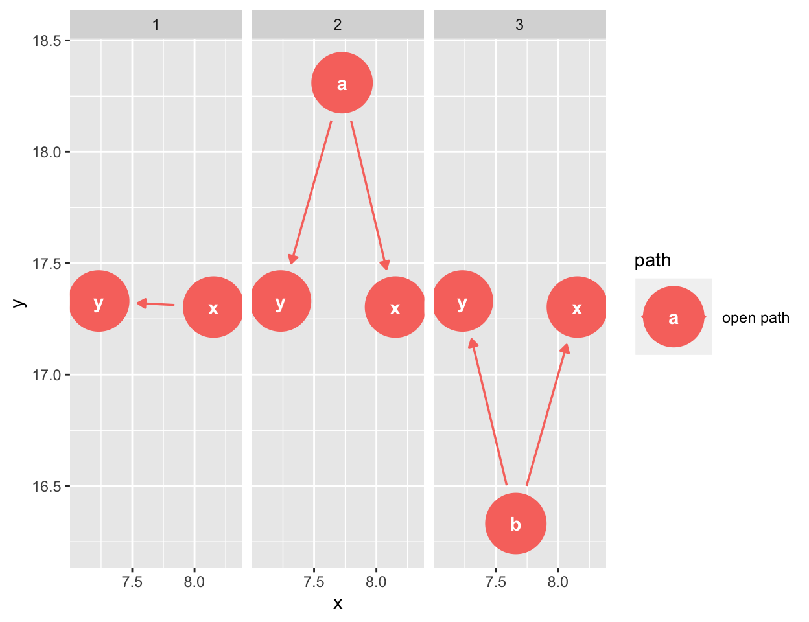
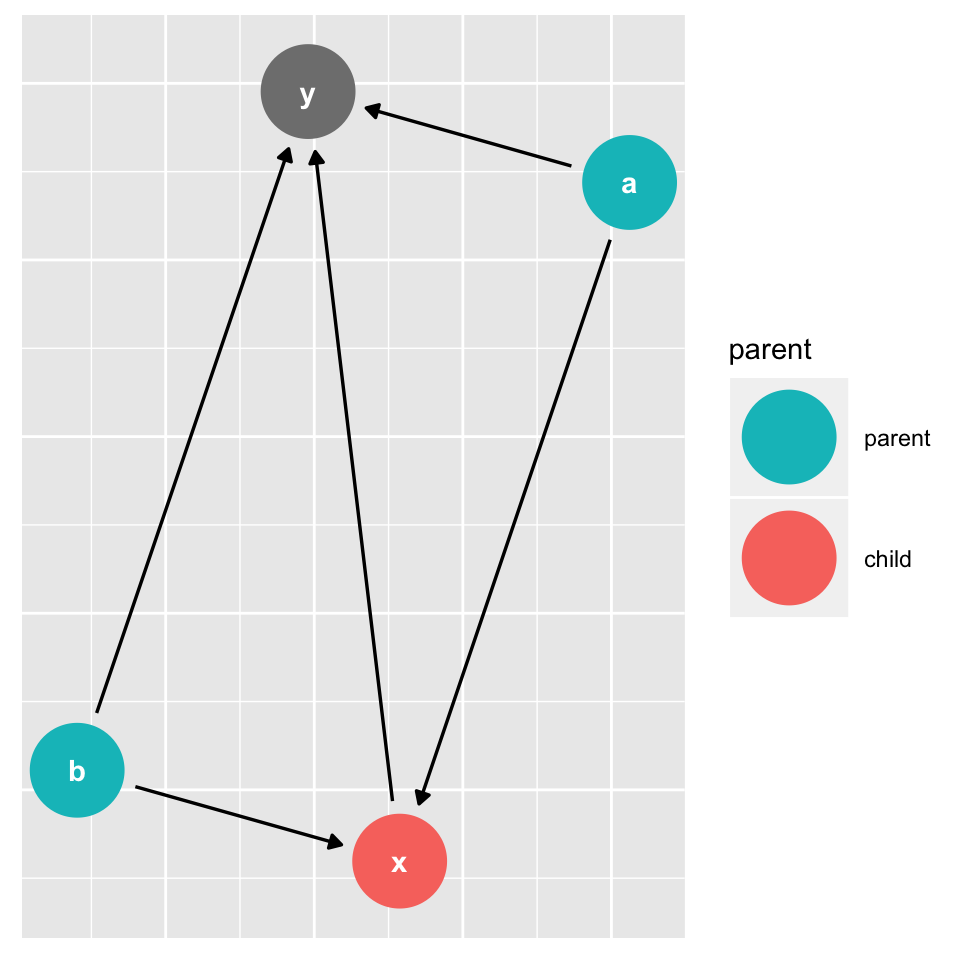
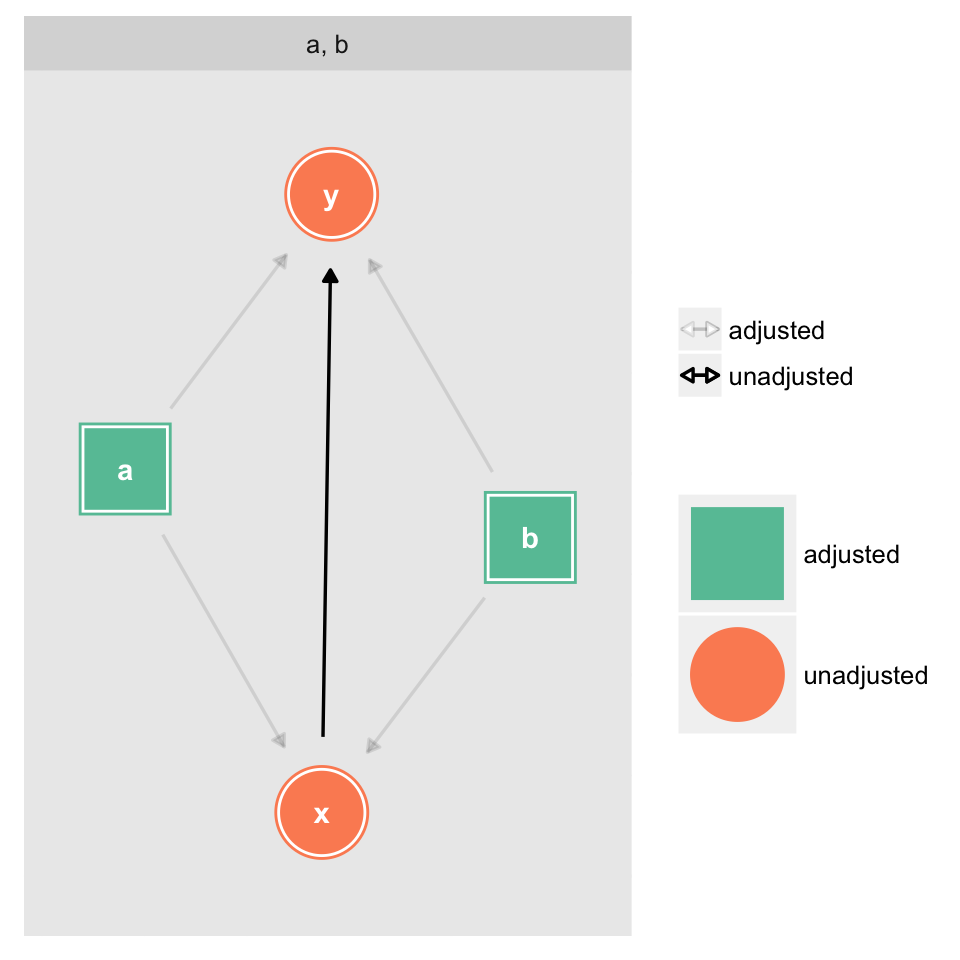
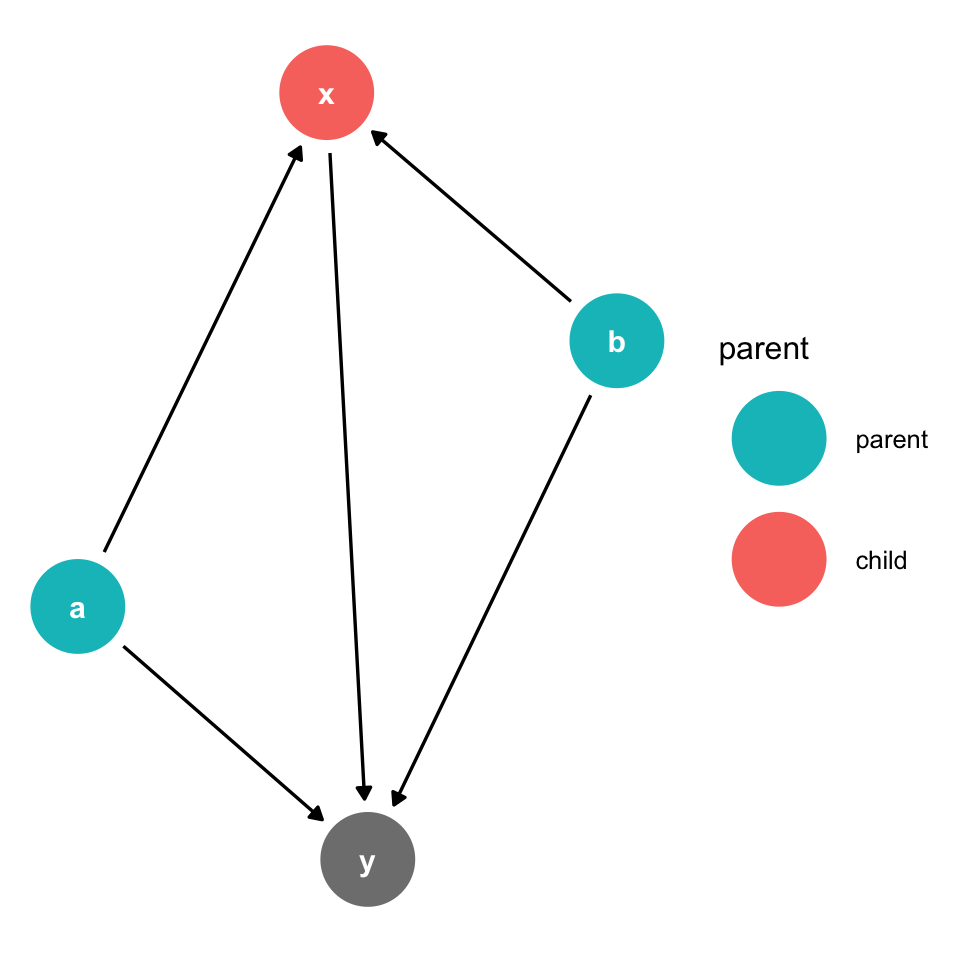
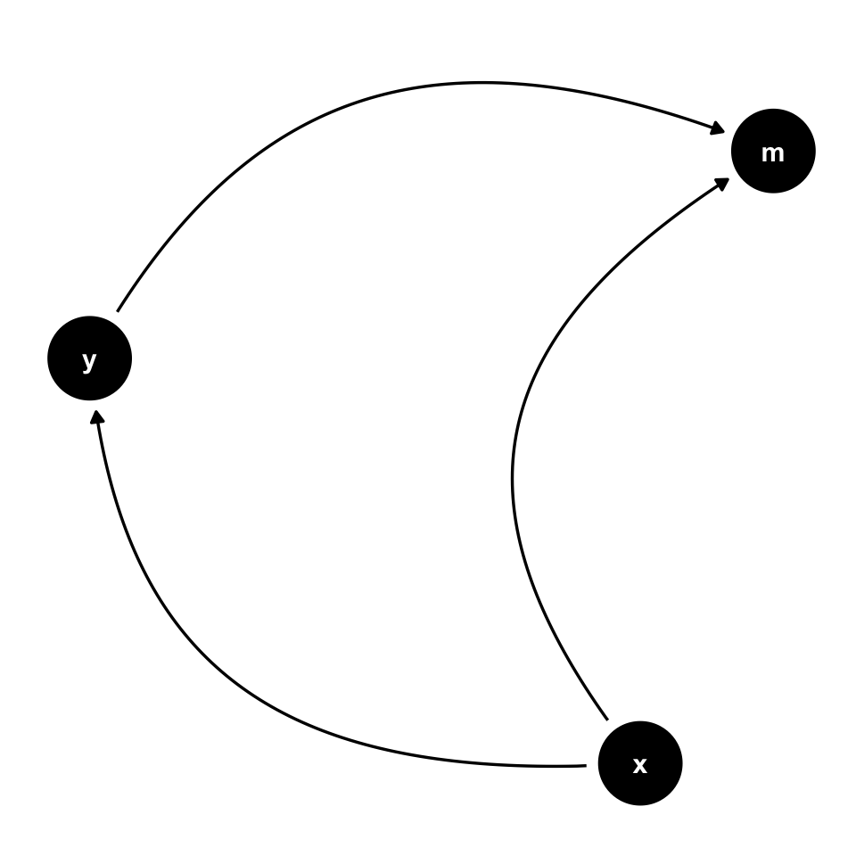
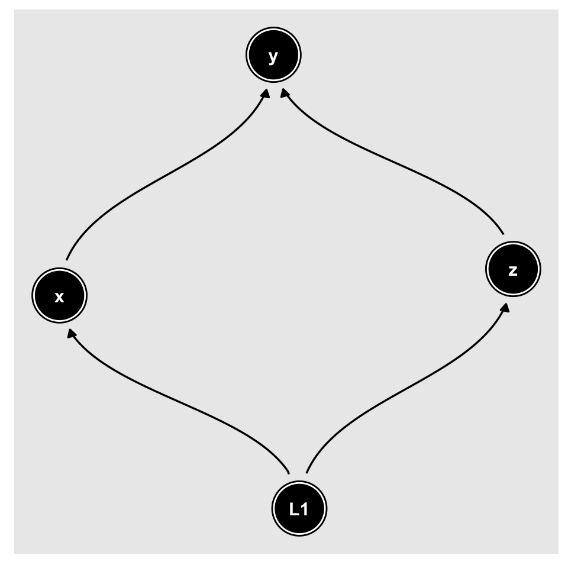

ggdag extends the powerful dagitty package to work in the context of the tidyverse by using dagitty’s algorithms for analyzing structural causal graphs to produce tidy results, which can then be used in ggplot2 and ggraph and manipulated with other tools from the tidyverse, like dplyr.
If you already use dagitty, ggdag can tidy your DAG directly.
library(dagitty)
library(ggdag)
dag <- dagitty("dag{y <- z -> x}")
tidy_dagitty(dag)
#> # A tibble: 4 x 12
#> name from x y direction type to xend yend
#> <chr> <chr> <dbl> <dbl> <fct> <fct> <chr> <dbl> <dbl>
#> 1 z z 28.5 23.3 -> directed x 28.5 24.4
#> 2 z z 28.5 23.3 -> directed y 28.5 22.1
#> 3 x x 28.5 24.4 <NA> <NA> <NA> NA NA
#> 4 y y 28.5 22.1 <NA> <NA> <NA> NA NA
#> # ... with 3 more variables: .ggraph.orig_index <int>, circular <lgl>,
#> # .ggraph.index <int>Note that, while dagitty supports a number of graph types, ggdag currently only supports DAGs.
dagitty uses a syntax similar to the dot language of graphviz. This syntax has the advantage of being compact, but ggdag also provides the ability to create a dagitty object using a more R-like formula syntax through the dagify() function. dagify() accepts any number of formulas to create a DAG. It also has options for declaring which variables are exposures, outcomes, or latent, as well as coordinates and labels for each node.
dagified <- dagify(x ~ z,
y ~ z,
exposure = "x",
outcome = "y")
tidy_dagitty(dagified)
#> # A tibble: 4 x 12
#> name from x y direction type to xend yend
#> <chr> <chr> <dbl> <dbl> <fct> <fct> <chr> <dbl> <dbl>
#> 1 z z 23.6 20.4 -> directed x 23.6 21.5
#> 2 z z 23.6 20.4 -> directed y 23.6 19.2
#> 3 x x 23.6 21.5 <NA> <NA> <NA> NA NA
#> 4 y y 23.6 19.2 <NA> <NA> <NA> NA NA
#> # ... with 3 more variables: .ggraph.orig_index <int>, circular <lgl>,
#> # .ggraph.index <int>Currently, ggdag supports directed (x ~ y) and bidirected (a ~~ b) relationships
tidy_dagitty() uses layout functions from ggraph and igraph for coordinates if none are provided, which can be specfied with the layout argument. Objects of class tidy_dagitty or dagitty can be plotted quickly with ggdag(). If the DAG is not yet tidied, ggdag() and most other quick plotting functions in ggdag do so internally.

A tidy_dagitty object is just a list with a tbl_df, called data, and the dagitty object, called dag:
tidy_dag <- tidy_dagitty(dagified)
str(tidy_dag)
#> List of 2
#> $ data:Classes 'tbl_df', 'tbl' and 'data.frame': 4 obs. of 12 variables:
#> ..$ name : chr [1:4] "z" "z" "x" "y"
#> ..$ from : chr [1:4] "z" "z" "x" "y"
#> ..$ x : num [1:4] 23.3 23.3 22.9 23.7
#> ..$ y : num [1:4] 25.5 25.5 26.6 24.4
#> ..$ direction : Factor w/ 3 levels "<-","->","<->": 2 2 NA NA
#> ..$ type : Factor w/ 2 levels "directed","bidirected": 1 1 NA NA
#> ..$ to : chr [1:4] "x" "y" NA NA
#> ..$ xend : num [1:4] 22.9 23.7 NA NA
#> ..$ yend : num [1:4] 26.6 24.4 NA NA
#> ..$ .ggraph.orig_index: int [1:4] 1 1 2 3
#> ..$ circular : logi [1:4] FALSE FALSE FALSE FALSE
#> ..$ .ggraph.index : int [1:4] 1 1 2 3
#> $ dag :Class 'dagitty' chr "dag {\nx [exposure]\ny [outcome]\nz\nz -> x\nz -> y\n}\n"
#> - attr(*, "class")= chr "tidy_dagitty"Most of the analytic functions in dagitty have extensions in ggdag and are named dag_*() or node_*(), depending on if they are working with specific nodes or the entire DAG. A simple example is node_parents(), which adds a column to the to the tidy_dagitty object about the parents of a given variable:
node_parents(tidy_dag, "x")
#> # A tibble: 4 x 13
#> name from x y direction type to xend yend
#> <chr> <chr> <dbl> <dbl> <fct> <fct> <chr> <dbl> <dbl>
#> 1 z z 23.3 25.5 -> directed x 22.9 26.6
#> 2 z z 23.3 25.5 -> directed y 23.7 24.4
#> 3 x x 22.9 26.6 <NA> <NA> <NA> NA NA
#> 4 y y 23.7 24.4 <NA> <NA> <NA> NA NA
#> # ... with 4 more variables: .ggraph.orig_index <int>, circular <lgl>,
#> # .ggraph.index <int>, parent <fct>Or working with the entire DAG to produce a tidy_dagitty that has all pathways between two variables:
bigger_dag <- dagify(y ~ x + a + b,
x ~ a + b,
exposure = "x",
outcome = "y")
# automatically searches the paths between the variables labelled exposure and
# outcome
dag_paths(bigger_dag)
#> # A tibble: 20 x 14
#> set name from x y direction type to xend yend
#> <chr> <chr> <chr> <dbl> <dbl> <fct> <fct> <chr> <dbl> <dbl>
#> 1 1 a a 17.3 19.2 -> directed x 16.8 18.2
#> 2 1 a a 17.3 19.2 -> directed y 17.7 18.2
#> 3 1 b b 17.3 17.2 -> directed x 16.8 18.2
#> 4 1 b b 17.3 17.2 -> directed y 17.7 18.2
#> 5 1 x x 16.8 18.2 -> directed y 17.7 18.2
#> 6 1 y y 17.7 18.2 <NA> <NA> <NA> NA NA
#> 7 2 a a 17.3 19.2 -> directed x 16.8 18.2
#> 8 2 a a 17.3 19.2 -> directed y 17.7 18.2
#> 9 2 b b 17.3 17.2 -> directed x 16.8 18.2
#> 10 2 b b 17.3 17.2 -> directed y 17.7 18.2
#> 11 2 x x 16.8 18.2 -> directed y 17.7 18.2
#> 12 2 y y 17.7 18.2 <NA> <NA> <NA> NA NA
#> 13 2 x x 16.8 18.2 <NA> <NA> <NA> NA NA
#> 14 3 a a 17.3 19.2 -> directed x 16.8 18.2
#> 15 3 a a 17.3 19.2 -> directed y 17.7 18.2
#> 16 3 b b 17.3 17.2 -> directed x 16.8 18.2
#> 17 3 b b 17.3 17.2 -> directed y 17.7 18.2
#> 18 3 x x 16.8 18.2 -> directed y 17.7 18.2
#> 19 3 y y 17.7 18.2 <NA> <NA> <NA> NA NA
#> 20 3 x x 16.8 18.2 <NA> <NA> <NA> NA NA
#> # ... with 4 more variables: .ggraph.orig_index <int>, circular <lgl>,
#> # .ggraph.index <int>, path <chr>ggdag also supports piping of functions, and includes the pipe internally (so you don’t need to load dplyr or magrittr). Basic dplyr verbs are also supported (and anything more complex can be done directly on the data object).
Most dag_*() and node_*() functions have corresponding ggdag_*() for quickly plotting the results. They call the corresponding dag_*() or node_*() function internally and plot the results in ggplot2.


# quickly get the miniminally sufficient adjustment sets to adjust for when
# analyzing the effect of x on y
ggdag_adjustment_set(bigger_dag)
ggplot2
ggdag() and friends are, by and large, fairly thin wrappers around included ggplot2 geoms for plotting nodes, text, and edges to and from variables. For example, ggdag_parents() can be made directly in ggplot2 like this:
bigger_dag %>%
node_parents("x") %>%
ggplot(aes(x = x, y = y, xend = xend, yend = yend, color = parent)) +
geom_dag_node() +
geom_dag_edges() +
geom_dag_text(col = "white") +
theme_dag() +
scale_dag(breaks = c("parent", "child")) # ignores NA in legend
The heavy lifters in ggdag are geom_dag_node(), geom_dag_edges(), geom_dag_text(), theme_dag(), and scale_dag(). geom_dag_node() and geom_dag_text() plot the nodes and text, respectively, and are only modifications of geom_point() and geom_text(). theme_dag() removes all axes and ticks, since those have little meaning in a causal model, and also makes a few other changes. scale_dag() is a convenience function that makes modifications to the scale of the plot to make them more ameniable to nodes with large points and text, as well as providing defaults for common analyses in DAGs, e.g. setting scale_alpha_manual() to work with an adjusted variables.
geom_dag_edges() is also a convencience function that plots directed and bidirected edges with different geoms and arrows. Directed edges are straight lines with a single arrow head, while bidirected lines, which are a shorthand for a latent parent variable between the two bidirected variables (e.g. a <- L -> b), are plotted as an arc with arrow heads on either side.
You can also call edge functions directly, particularly if you only have directed edges. Much of ggdag’s edge functionality comes from ggraph, with defaults (e.g. arrow heads, truncated lines) set with DAGs in mind. Currently, ggdag has four type of edge geoms: geom_dag_edges_link(), which plots straight lines, geom_dag_edges_arc(), geom_dag_edges_diagonal(), and geom_dag_edges_fan().
dagify(y ~ x,
m ~ x + y) %>%
ggplot(aes(x = x, y = y, xend = xend, yend = yend)) +
geom_dag_node() +
geom_dag_edges_arc() +
geom_dag_text() +
theme_dag() +
scale_dag()
If you have bidirected edges but would like to plot them as directed, node_canonical() will automatically insert the latent variable for you.
dagify(y ~ x + z,
x ~~ z) %>%
node_canonical() %>%
ggplot(aes(x = x, y = y, xend = xend, yend = yend)) +
geom_dag_node() +
geom_dag_edges_diagonal() +
geom_dag_text() +
theme_dag() +
scale_dag()
There are also geoms based on those in ggrepel for inserting text and labels, and a special geom caled geom_dag_collider_edges() that highlights any biasing pathways opened by adjusting for collider nodes. See the vignette introducing DAGs for more info.